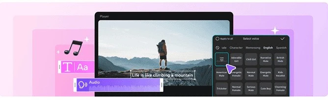

How to Download CapCut on PC: A Simple Guide with Benefits and a Touch of Humor
Are you a video editing enthusiast who’s been using CapCut on your mobile device and now wants to take your editing skills to the next level on your PC? Well, you’re in the right place! In this guide, we’ll walk you through how to download CapCut on PC?, explore its benefits, and have a little fun along the way. So grab your favorite snack, settle in, and let’s dive in!
What is CapCut?
Before we get into the nitty-gritty of downloading CapCut on your PC, let’s start with a quick overview. CapCut is a popular video editing app originally designed for mobile devices. It’s known for its user-friendly interface, robust editing features, and a plethora of creative tools that make video editing a breeze. From trimming and cutting to adding effects and music, CapCut has become a go-to app for content creators around the globe.
Why Use CapCut on PC?
While CapCut is fantastic on mobile devices, using it on a PC can offer several advantages:
- Larger Screen: Editing on a bigger screen can be a game-changer. You’ll get a clearer view of your footage, making it easier to fine-tune every detail.
- Better Performance: PCs generally have more powerful processors and greater RAM than mobile devices, which can lead to smoother performance and faster rendering times.
- Enhanced Controls: With a mouse and keyboard, you’ll find it easier to navigate through your project and make precise edits.
- Multitasking: Working on a PC allows you to easily switch between different applications, which can be handy when you’re managing multiple tasks or resources.
How to Download CapCut on PC
Now that you’re convinced CapCut on PC is a great idea, let’s get into the practical steps. Since CapCut doesn’t have a native PC version, we’ll use an Android emulator to run it on your PC. Here’s how you can do it:
Step 1: Download an Android Emulator
An Android emulator allows you to run Android apps on your PC. One of the most popular emulators is BlueStacks. Follow these steps to get started:
- Visit the BlueStacks Website: Go to BlueStacks' official website and download the installer.
- Install BlueStacks: Open the downloaded file and follow the on-screen instructions to install BlueStacks on your PC. It’s like setting up a new gaming console, but for apps!
- Launch BlueStacks: Once installed, open BlueStacks. It might take a minute to start up, so be patient.
Step 2: Set Up BlueStacks
- Sign In: You’ll need to sign in with your Google account. If you don’t have one, you’ll need to create it. It’s like signing in to a new video game—just with fewer dragons.
- Access Google Play Store: Once signed in, go to the Google Play Store within BlueStacks.
Step 3: Download CapCut
- Search for CapCut: In the Play Store, search for “CapCut.”
- Install CapCut: Click on the CapCut app from the search results and hit the “Install” button. It’s like clicking “Buy” on a game you’ve been eyeing!
- Open CapCut: After installation, you’ll find CapCut in the “My Apps” section of BlueStacks. Open it up, and voila! You’re ready to start editing.
Benefits of Using CapCut on PC
Now that you’ve got CapCut running on your PC, let’s look at some of the benefits you can enjoy:
- Superior Editing Experience: With a larger screen and the precision of a mouse, editing becomes more enjoyable and efficient. Say goodbye to those pesky accidental taps!
- Improved Performance: A PC with a good processor and ample RAM will handle your editing tasks more smoothly. No more waiting for ages for your video to render!
- Multitasking Made Easy: You can have multiple windows open, such as your video files, CapCut, and other tools you might be using, all at the same time.
- Easy File Management: Dragging and dropping files is a breeze on a PC. Managing your video assets becomes more intuitive and less cumbersome.
- Better Control: The keyboard shortcuts and mouse controls offer more precise editing capabilities. You’ll find it easier to navigate through timelines and make fine adjustments.
Tips for a Smooth Experience
- Keep BlueStacks Updated: Regular updates ensure better performance and compatibility. Think of it as keeping your game console up-to-date for the latest features.
- Optimize PC Performance: Close unnecessary applications while editing to make sure your PC’s resources are fully dedicated to CapCut.
- Explore BlueStacks Settings: Adjust the emulator’s settings for better performance and compatibility with your PC.
Troubleshooting Common Issues
Even the best setups can encounter hiccups. Here are some common issues and how to address them:
- Slow Performance: If CapCut is running slowly, try allocating more RAM to BlueStacks through its settings. You can also close other applications to free up resources.
- App Crashes: Ensure BlueStacks and CapCut are updated to their latest versions. Sometimes, a simple update can fix stability issues.
- Installation Problems: If you encounter issues installing CapCut, make sure your internet connection is stable and try restarting BlueStacks.
What is Capcut Mod iOS?
The CapCut Mod for iOS brings a treasure trove of benefits to the table, making it an appealing choice for anyone looking to take their video editing game to the next level. From unlocking premium features for free to enjoying enhanced customization and advanced tools, the modded version offers a host of perks that can make your editing experience both efficient and enjoyable.
Final Thoughts
Downloading and using CapCut on your PC can elevate your video editing game to new heights. With a larger screen, better performance, and enhanced controls, you’ll find editing more enjoyable and productive. Plus, you’ll have the satisfaction of knowing you’ve unlocked a new level in your video editing journey.
So go ahead, fire up CapCut on your PC, and start creating amazing videos. Remember, editing should be fun, so don’t stress too much about perfecting every detail. Embrace your inner editor, and let your creativity shine!
Happy editing!